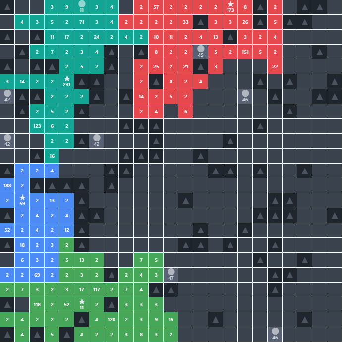

Built for the love of it
Projects
Self-directed and competition work, laid out by how close to the metal it runs, from a browser product down to hand-written machine code.
Product
whole apps and services, from the browser in
A Moldova-only platform matching businesses with local creators through an AI-ranked shortlist.
Next.js + FastAPIsolo buildpgvector + Claude

Small real-world annoyances, automated away: change alerts, a bot that grabs a gym slot the instant it opens, and one that applies to jobs for you.
5 bots: change-tracking · SSO booking · event aggregation · legal acts · job auto-apply
Pythonaiogram + CeleryPlaywright
Systems & compute
numerical and market engines, scored against a judge

A from-scratch lab for the real-time strategy game generals.io: a numpy battle simulator, a heuristic commander that plays through fog of war, and a neural policy trained to imitate it.
Four parts: simulator · heuristic bot · Elo ladder · neural policy
Python + PyTorchself-directed27 test files · 100 tests

A from-scratch QEM edge-collapse solver for Huawei’s 2nd IMC Challenge, with a hand-built renderer to predict its own score.
C++Huawei IMC87.49 score · 7/7 cases

Options market-making on Black-Scholes pricing with an IV-smile fit, delta hedging, and a hand-written time-series test library.
PythonIMC Prosperity 4NumPy · SciPy